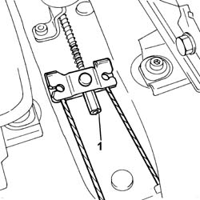

3380A04 handbrake - check travel
- Path
- Procedures > 33 BRAKING SYSTEM > 3380 HANDBRAKE > 3380A handbrake control and linkage > 3380A04 handbrake - check travel
- Kind
- repair procedure (removal / refitting; the operation number is the code)
- Applies to
- all engines; all production periods
- Interactive page
- https://sloeber94.github.io/elrnDB-fPnd/en/#/2752771
Applies to: all engines; all production periods
The recovery of the clearance due to wear is automatic, the adjustment of the handbrake should only be carried out after having replaced the rear brake shoes, the rear brake cylinder and the complete cable.
Proceed with the adjustment when the vehicle is on the lift.
1. Make a note of the position of the nut, then loosen the adjustment nut for the handbrake cable by at least two or three turns to ensure that the cable is completely loosened.

Applies to: all engines; all production periods
Start engine.
With the engine idling, press the brake pedal forcefully at least 10 or 15 times.
Retighten the handbrake cable adjustment nut to the original position.
Make sure that, with the handbrake lever in the rest position, the rear wheels can rotate freely.
Check that the braking action of the handbrake starts before the first notch.
At the end of the adjustment, check that the lever does not travel through more than five notches of the toothed sector.
Switch off the engine.
Remove the vehicle from the ramp.